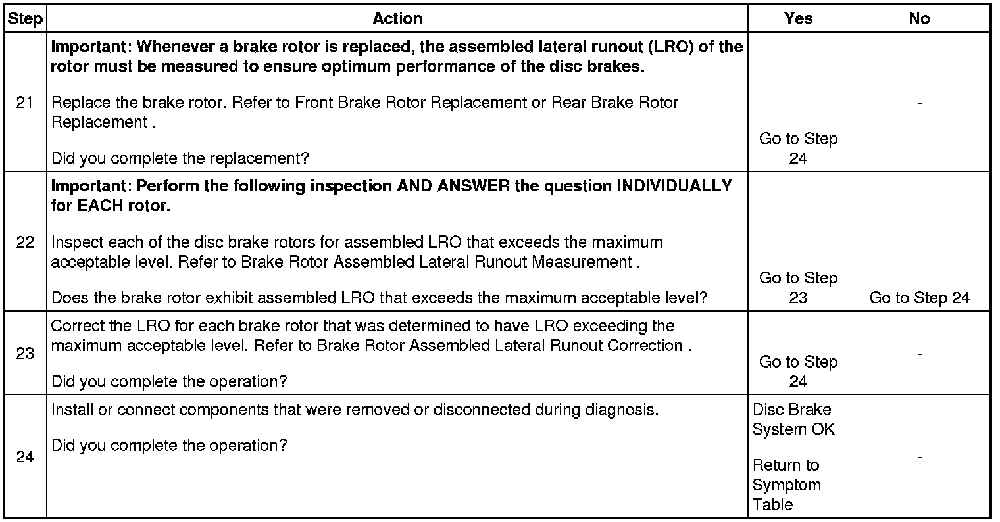

Disc Brake System Diagnosis
Disc Brake System Diagnosis
Test Description
The numbers below refer to the step numbers on the diagnostic table.
9. Lubricant leaks from non-brake system components may come in contact with and contaminate brake system components.
10. Lubricant leaks from non-brake system components may come in contact with and contaminate brake system components.
12. Disc brake rotor shields/backing plates that come in contact with disc brake rotors may cause brake system noise.
15. Disc brake rotor thickness variation that exceeds the maximum acceptable level can cause brake pulsation.
19. Disc brake rotor thickness variation that exceeds the maximum acceptable level can cause brake pulsation.
22. Disc brake rotor assembled lateral runout (LRO) that exceeds the maximum acceptable level can lead to thickness variation.
